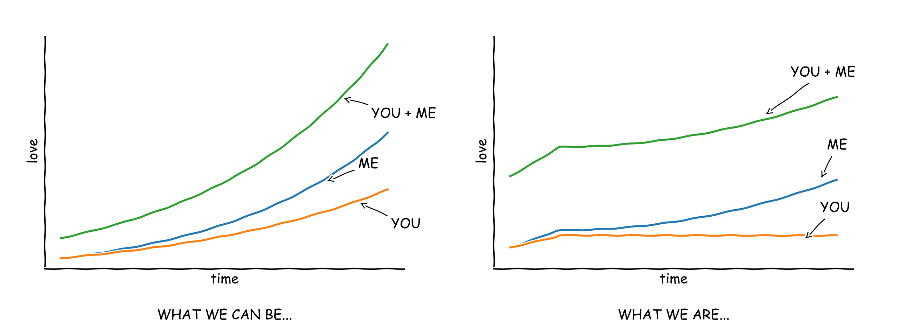
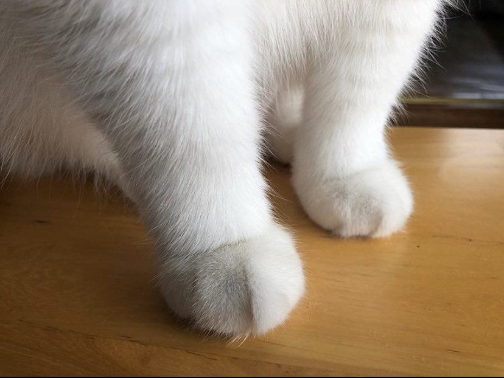
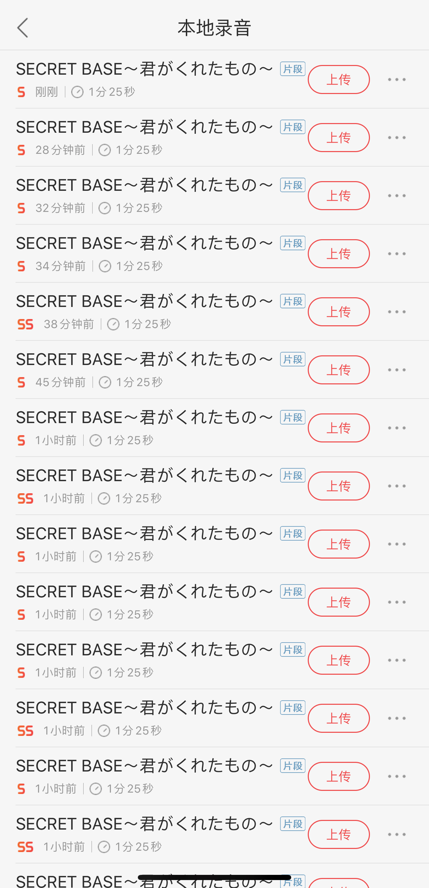
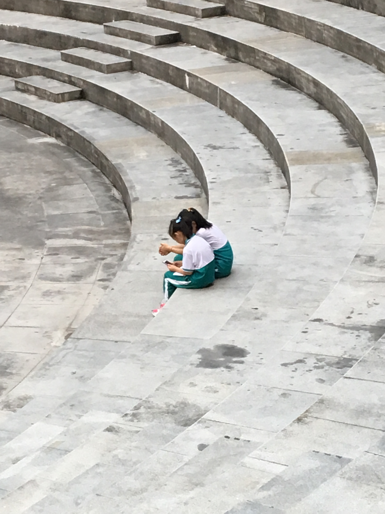
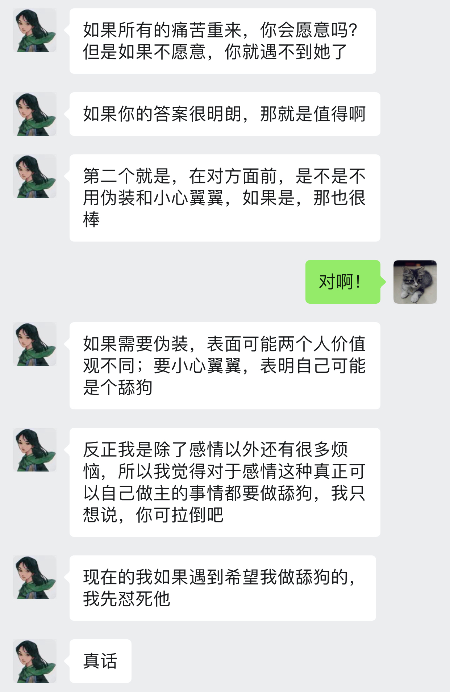
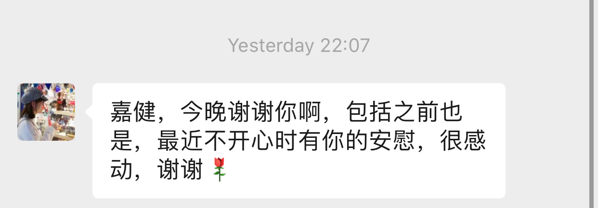
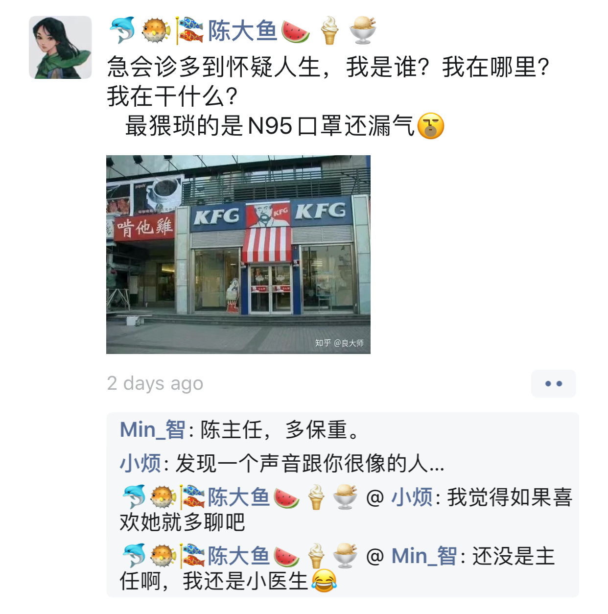
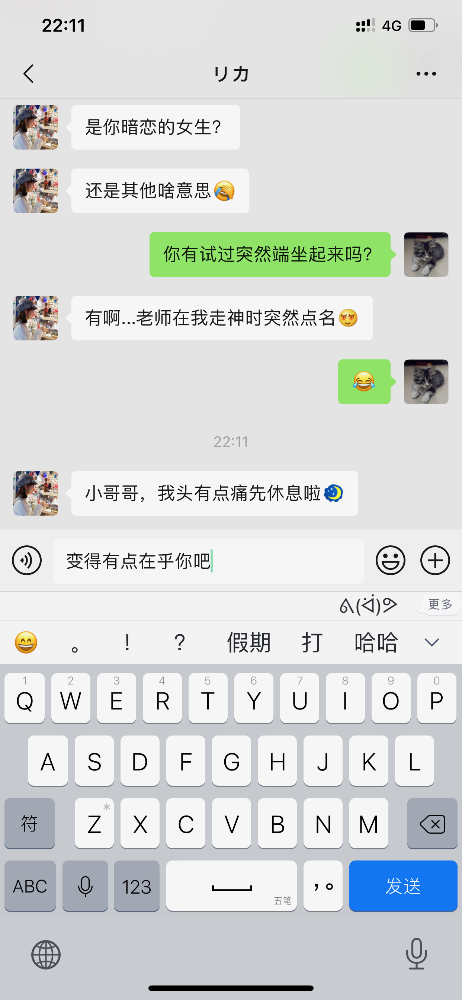

朝顔
如果你想说，那我就在听．
一觉起来发现今年2月居然有29号！看来感情这东西真的会让人变傻……
看到你这么忙，我在想我是不是应该也要收敛收敛……🙁
晚上我在唱《あなたのために弾きたい》，歌的难度跟长短真的没什么关系……没学会弹之前，先学会唱吧．
好想找你说话，现在是21点09分，忍多一个钟的话，等你睡了今天我就能放弃这个想法．
今天是2月28日，这个月的最后一天．
离我们认识过去了36天．
离我们真正聊了起来过去了34天．
离我还没表白就被你拒绝了过去了21天．
离你上一次主动找我过去了大于等于21天．
离我跟第一次跟你说我喜欢你过去了20天．
离你第一次说感谢有我的存在过去了15天．
离我们第一个没有成功表白的情人节过去了14天．
离我决心把我（们）这一切都分享给你过去了14天．
离我给你送了第一份纪念日礼物过去了4天．
离我第一次光明正大地说想你过去了两天．
这应该是我过得最漫长的一个二月了．明明二月只有28天．可是，这是有你存在的28天．从你关门的那一刻开始，我知道只有我自己的握着的话，总有一天你会离我越来越远．但是，我喜欢你．
我这样的人是你眼中应该很傻吧hah，我只是想喜欢这件事情纯粹一点．
其实我只见过一两次牵牛花．
之所以叫朝顔其实与牵牛花没有关系，虽然朝顔就是牵牛花．第一次看你照片上笑顔的时候，我想，这大概是早上起来想看到的样子，这大概就是一天都想看到的样子．于是就借用了这名字．当然，如果牵牛花也能开到晚上就好了．
据说牵牛花是一种很勤劳的花，是生命的象征．
晨曦中人们一边呼吸着清新的空气，一边饱览着点缀于绿叶丛中的鲜花．
同时也代表着坚持．
牵牛花具有极顽强的生命力，花藤虽然娇柔细长，却能绕篱萦架，攀援延伸．
我再去查了一下牵牛花的花语．
爱情、冷静、虚幻．
现在回想起我所看到的你，这真的没有起错名字．当然，在真实里它名字的由于，我还是比较喜欢这个．
因为牵牛花的花朵内有星形花纹，花期又与牛郎织女星相会的日期相同．
如果一定要变故事，为什么不选一个更美好的？
做梦是一件好奇怪的事情．
以前曾经试过梦见一些话，一些几乎我百分之一百肯定从没听过的话，然后我就记住了．有一天，我突然有别的地方见到这些文字，觉得非常不可思议．
我昨晚梦见了你．然而我俩却从未谋面，唯一记得的是你的笑脸和声音．我们走在小镇的街道上，附近都是矮小的房屋，但不是在日本．突然就地震起来，周围的房屋都摇晃了起来，地面接着就开裂了．我带你一边跑一边躲开地上的裂缝，跑了不知道多久，大地才平静下来．奇怪的是，为什么街上除了我和你，为什么一个人都没有？看到旁边的你还在，还好．不知道怎的，就醒了．
实在忍不住，想告诉你，我想你．
啊～！
这是个可能比暑假要长的寒假．很长．这个是你问的问题的真实答案．
当你说"我们"的时候，我总首先想起的是你们医院，而不是你们诊所……我想，莫非医院也会倒闭？！🙄
I've always believed in numbers, in the equations and logics that lead to reason. But after a lifetime of such pursuits, I ask, "What truly is logic? Who decides reason?" My quest has taken me through the physical, the metaphysical, the delusional – and back. And I have made the most important discovery of my career, the most important discovery of my life: It is only in the mysterious equations of love that any logic or reasons can be found. I'm only here tonight because of you. You are the reason I am. You are all my reasons. Thank you.
— A Beautiful Mind
今天走在路上的时候不知道咋的就想起了这部电影．除了结尾以及主角陷入妄想的片段，剧情基本上我都忘了．这段话是电影里的他上台拿诺贝尔奖的致词．这个世界上不讲逻辑，不可推导，不能证明的事情是不是太多了．为什么喜欢不能只是喜欢，爱不能只是爱．不能是全部的话，也得让它们占上个百分之八九十吧．所有剧情都遵循剧本而不是内心，再美的公式又有什么用！人生如戏，如戏个屁！
I don't, I just believe it.
多一个月，好好好漫长啊！😔
《求婚大作战》里有一句话，对一个大叔对主角说的．
失敗しても当たり前、成功したら男前．
这句话日语里好押韵……我的水平难以将它翻译成中文而同样押韵．粗暴的翻译过来大概就是"失败是理所当然的，而万一成功了就出人头地．"
可能失败的事或者不太可能成功的事情实在太多，硬是要算概率的话，虽然可能只有5%会达成，但万一成功了呢？是不是这个过程的一切一切都将显得更有意义？頑張って！君も！僕も！
有时候很矛盾……想和你多说，但会想你会不会介意．
一月快乐～
😄我是绘图小能手～

说出来可能你不信，我3岁就精通看手相．这两手一看，就知道是是百年难得一遇的好姻缘！
第一次在现实里看到食指比无名指长的人哈哈．好特别．其实你的手指很修长，虽然大家手指的长度和掌心差不多，但我的手指就粗很多……看到手，我就会想象整个人是怎样的．如果是看到胖乎乎的小手，就想是不是人就会有点婴儿肥？看到修长的手指就会想是不是个清秀的小姐姐？看到……我想起了我看到猫咪的爪子的时候，眼睛都要发光了！梅花印一样，可爱极了！

悄悄地跟你说，我还发现了你的菜单栏上有4个看视频的软件！还有，你的字好像打结的小虫子！看起来竟然有点可爱！😆

😕这件事，比我想象中难得多，很多，非常多……
有人说：回忆就代表活得不如从前了．如果真的活得不如从前了，我就飞回这块地方，静静地回忆．
第一次看到这句话的时候，应该是我还在用微博关注了霍思燕的时候．对她的印象目前只留下了这句话和知道她是一个美女……那时候看《玫瑰江湖》，她貌似还没火起来，觉得长得有点好看就默默关注了；后来不知咋的火了，反而就没有再关注了，直到没有再登陆微博．
我没有去想我是不是活得不如从前了，但我是一个喜欢回忆的人．或者说，有些奇奇怪怪的记忆总是占用着我的内存．现在我还能一字不漏地背《桃花源记》，但我也不知道为啥我记得的是它．其它文章大概也就记得一两句：秦人不暇自哀而后人哀之，后人哀之而不鉴之，亦使后人而复哀后人也……会语文书哪一篇文章上面插图是在左页还是右页，文本在图的上面还是下面．会记得数学书里某个定理是从哪一页开始证明到哪一页．还会记得自己一些无聊的涂鸦话语写在哪一页的空白上．会记得放学的时候拿粉笔扔过谁．会记得自己在何时何地跟谁说过哪句无关紧要的话……好吧，这些东西没什么好记，也没有什么好回忆的……但不知咋的就保存得这么好．
住在学校的时候，散步经常文化广场，就喜欢在那里驻足停留．那里总是没什么人．记得考《拓扑学》之前，因为图书馆没有座位，我就在那里坐了好几天．那是一月上旬，虽然很冷，但有阳光，所以实际也没那么冷．我就那样坐着看课本，偶尔也看一下路过的零星几个人．好几天里也没有发生什么特别的事情．就像，一件小事．在那之后，当我路过广场的时候自然会想起那一段短暂的日子．现在我已经不在学校那边出没了，有时我只是走在某条路上，就会突然想起那几天．那时的我不是有多刻苦，有多认真，也不是说考试有多么惨不忍睹印象难忘．我大概只是记得那几天的阳光和温度．

夜阑人静的时候，有时会打开手机，随意翻翻相册，点到哪里就是哪里．我不知道这是不是刻意的回忆，我就是无聊随便翻一翻．照片里自然记录下过往的那一个瞬间，蓝天，白云，阳光，风景，人像，笑颜，夜幕，灯光……是那么的真实，看到的时候自然会想起当天眼前的景象．但是，按下快门那一刻的心情，只有摄影师自己知道，也只属于他自己．脑海里那些不时闪现的片段，大概也是因为当时的心情，才变得那么深刻．尽管它可能很奇怪，比如那一个涂鸦，大概是上课走神，在老师眼皮底下痴笑着画出来的．自己没有意识到，但它可能跟记忆一样潜藏在某个大脑部分，有一天伴随记忆总能被唤醒．
所以，那些所谓的回忆，大概最重要的是它记录着自己的心情．片段会变得模糊，但心情不会．我没有怎样去想是不是活得不如从前了，可能偶尔我只是有意或无意需要当时去唤起曾经的那一点波澜，让自己记得生活的各种味道与颜色．有天真的活得不如从前了，我想，我应该也会找个地方，静静地回忆．
如同往常一样，跟你聊天很愉快．晚安．（当然，我心里还想着别的哈哈．）
之前听说，如果老人和小年轻谈恋爱，老人总是经历过很多，对小年轻的想法把握精准，总是让小年轻感觉自己被照顾之类．还有就是老人的很多想法，都来源于各种Ex，因为以前犯过错了，现在才懂得去做．为啥我没有这样的技能？！是青春都喂小狗了，还是说自己太没心没肺，还是情商太低……还是说不应该去想，舒服就好？😂
感觉你什么时候都在操心着家里的事情，真是个懂事的孩子……但我想，如果你也给自己一些时间和空间就好了．虽然你也有，但感觉也是贡献给家里的……
我的那个时候在做啥呢？我想了一下，大概就是做了一年的后台开发，发现自己还是想做跟数学相关的事情．依稀记得在愚人节给CEO发了邮件说想聊一下离职，还特意说这不是愚人节玩笑……那时候应该是我第一次如此坦荡地和一个工作上认识的人谈这么多吧．通常，我通常和同事会保持一定的距离，当然不是说像陌生人一样，而是说不会把每一个同事都当成朋友关系来维持．当然，也有少数同事不是，CEO就是其中一个．
那时候公司只有10几人，正处于生死存亡阶段，他没有责备我，我也没有扭头就走．3个月的离职交接时间应该是史无前例了．最后的日子里，我把留到我手上的最后一个产品做完，而它也是我在那里唯一无论怎样都值得记住的产品．每次脑海中浮现起它的名字的时候，就会想起同一TEAM里的每个人奋斗的样子．尽管人这么少，但操起心只做好一件事的样子，是多么难忘．作为第一份正式的工作，在短暂的一年里，除了收获到了经验，我还收获到了尊重和成就感．
以前我会忍到晚上才找你，现在不想忍了……
你会唱歌？！我……想听．我也……
今天应该是我认识你以后离你最近的一次了，目测只有几公里……不敢和你说，怕你不高兴．
在车上，我一直想．什么才是长久的婚姻．
遇到一个喜欢的人应该不难，遇到互相喜欢怎么说也会难一点．
虽然离我还有点遥远，但我大概不会要没有爱情的婚姻吧．经常看到有说要找三观一致的人，我总觉得有点抽象……是不是可以理解为聊得到一起，玩得到一起，活得到一起就是了．有时候看到别人吵架，连吵架都吵到不一个点子上，是不是就对不上头……
在这一个离婚率奇高，各种出轨分家产新闻到处飞的年代，到底是什么让两个人能坚持走下去．这么说又好像不对，如果婚姻是幸福的，是爱情，为什么需要坚持，理应是享受啊．
我想长久的婚姻应该是喜欢、沟通、责任、信任和包容．（写了一大段又删了……像高考作文🙄）
至于年龄差在这扮演什么角色，我实在不知道．用一辈子换来的花朵，相比残缺，我宁愿握紧阳光好好盛放一回．
自我介绍，演讲，比赛的我，确实不习惯只有一个人的舞台……但和陌生人聊天却不会．不过，你早就已经是"熟人"了……以前我常常发现我有个坏习惯，就是不害怕与别人交流，但是常常很容易就交浅言深．每次都是自己过后才发现．虽然并没有因此而吃过什么大亏，不过每次都会提醒自己不要太早地打开自己的内心世界，渐渐就变得有所保留．和你，我无话不说．或者是因为是你，让我卸下了所有防备吧．
当我开始写着丑丑的字的时候，你还是个宝宝👶哈．明明在同一时空里，却在不同的时间线上．不过那又怎样呢？缘是天意，分是人为．虽然不在同一起跑线上，但相遇是天意，还有我的勇气．过去已过去，未来还未来，等着我 们 创造呢．
一屋两猫，三餐四季．缺个人呢……
☺️
直到我和陈医生通过一条朋友圈聊起天来．

原来的我，大概会在二月十日和你表白．我想把这特别的一天，变成真正的纪念日．而现在五天前，我就知道了结果．如果这个五天前的这个结果，再推到二十一天之前就让我知道．我还会去答你的题吗？
我想我会．答题只是一个仪式．最初的我为你的笑容所吸引，而它也会一直成为我一分（份）喜欢．你我本来就萍水相逢，就算现在穿越回去，告诉自己一切，我会信吗？就算信了，一切就会变得完全不一样吗？我想起了看过五十几次的《求婚大作战》．泣き顔を笑顔に変えたぐらいで、人生変えられると思ってる？去认识你，是我当下最想做的事，之后怎样展开，看的不是剧本，而是你我．我享受向走你近的这个过程，享受在你面前可以不用伪装坦露心声，享受你与我分享生活与情感的点滴．哪有什么时间去想什么甘心不甘心？能做主的事情，是太少了．我的想法，是不是太肤浅．
两天都潮潮湿湿，但今天出太阳了．
在还没有走近你之前，我不了解你的过去，也不知道你经历过什么．但是，我想你变得坚强和勇敢，用笑容把所有阴影抹去．我不知道陪伴是不是告白，也没空理会，我想你开心，这样才不辜负你的笑颜；如果不能，我想让你开心，只要我可以．你想静静，那我也静静的．不然，我一直都在．
初めて、君は僕の名前を呼んでくれました．バレンタインデーより、今日を僕らの記念日にしてほしいです．你不用怕我误会什么，因为你说什么我都会误会的……或许你会因此而疏远我吧．

今晚在这里说晚安吧．
今天看到有人说：如果要分开，那么怎样区分是不甘心还是喜欢．如果分开是觉得自己惋惜，那应该就是不甘心．如果分开是因为一起的时候享受和对方一起的过程，那么应该是喜欢．
刻意向你了解了一下你以后的想法，一直觉得你年纪轻轻承受着巨大的压力haha……😂然后你就转换话题了……无法再深入走进你的内心．
我相信（或者只能是期待）有一天你会向我敞开心扉．
终于听到你的声音，一听就知道是个很正经的（真面目な）小姐姐．听到的那一刻，感觉"実感"又增加了．

早上给你发了一首最近喜欢听的歌，感觉大小姐的声音很有穿透力．你的笑容跟她的一样好看．
我也想，有一天可以为你而弹．我也想，可以守护你的笑容．

告诉自己要看开点，可一想到你再也不会找我就看不开了……保持距离，大概是你能保护自己情感上不受伤害的最好方式．不会陷进去，就不会不能抽身．我不想你受到伤害，但我也想你要……
"明天再聊"，我大概再也看不到了吧……
😔😔😔好难过．那么心里突然一空的感觉，该用什么语言来表达．打字好难，坐在桌前也好难，我想带你去看阳光．
心里空荡荡．想找你说话，但又不知道怎么开口……为什么突然变得那么难．
我把包里的钢笔和本子拿了出来，有时我不知道做什么咋的就会这样．字也写得不好看，画也不会画，一年算下来，大概应该没执笔写过多少字，更何况是钢笔．但是当钢笔拿在手上，在纸上"沙沙"地在纸上滑过时，无论写什么，抄什么，画什么，感觉很实在．这大概是为突如其来的空白进行填补的一种方式．
看着这本子，我想起了以前学习日语的日子，里面写满一页一页的单词，假名，和只有我自己才看得懂的笔记．看着本子的封面，也不知咋的想起了折纸．
手拙，还是折两次才折出来，唉．晚安．
时间能治愈一切，也能毁灭一切．
沧海桑田，在时间的长流里，一切显得多么渺小．雕阑玉砌应犹在，只是朱颜改．有感情的都被治愈或毁灭，只有没感情的才任由时间缓慢侵蚀．在还能感受每一下呼吸和心跳的时候，我不想把感情交给时间来赌一次，看下是治愈还是毁灭．如果最后我是自取灭亡，那到时就让痛苦来得痛快一些．但我不会放弃你．
"你有没有想过，也许其实你也没有那么喜欢我？"
我想了一下，好像也没有多喜欢，7分喜欢吧．1分为你的笑容所吸引，1分感受到你的直率和真诚，1分看到让我最欣赏的自律，1分会顾及家人的感受和羁绊，1分让老迈的我依然向往的简单和纯真，1分敲开了通向彼此内心的大门，和1分毫无道理的只因是你．不知道几分才符合表白的规矩，也不知道几分才算喜欢．但是，我能感觉到眼下的你，是我想一起书写故事的人．
曾经我也会怀疑你并不真实，看不到也触不着．后来我明白，万一你不是真实，那又怎样？但能让我洋洋洒洒一大堆废话写下来的，也只有你一个．我怕这一种心跳会忘记，尽管它在我的键盘上变得如此平淡而乏味．
如果我们还是相隔100步，我走90步，你走10步？
我都没有表白，你就发卡了．
好难过．它，大概只能用这三个字平铺直叙出来．
我不知道什么是原则问题．喜欢一个人会被什么原则左右．更不知道年龄差是怎样成为一个原则问题．我可能想诡辩．大一年是大很多吗？不是？大两年是大很多吗？……大六年是大很多吗？不是？大七年是很多吗？是？为什么多大一年就是大很多？为什么八年就不可以？
八年，差的是什么？八年，是不是就可以定义衰老．经常看到说35岁的程序员将何去何从？我从没有想过这个问题．为什么喜欢的事要用年龄去界限做与不做．为什么程序员总要被扣上加班多，头发少，死得早，情商低的帽子？八年是不是就得扣上身体素质差性不健康的帽子？可能不是，但就是．人それぞれ？在大众眼里，我不过也一样．
静待的花，原来与我无关．
我知道情绪要开始失控，我怕说错话，怕失去你，不敢说，也不敢写．我只能跟你早点说晚安．
在床上对着天花板又一想，你不过在逃避，或者回避．这没有对错之分．今天可能这个问题，你选择放弃眼前，有一天是不是也会因为"原则"（被迫？）放弃另外的东西？没有知道今天还是以后哪一个更加重要．只是，可能我把感情看得很重．我知道你肩负着压力，虽然人无法总是过得无拘无束，但我想你过得更主导一些你的生活．问题从前有，现在有，以后也会有；自己有，跟我有，跟别人也有．今天的我可能现在不走运，还不是可以成为让你做出改变的那个人，但我想，你一定一定，有一天让我看到你想，你能真正选择时的笑颜．
都说年纪大的人时间耗不起，对我来说几个月后跟我说性格不合什么的被抛弃，都没被遇到一个能聊的人因为突如其来的压力所放弃带来的难过要大．我每天都在积攒勇气，在等待，也在克制．我以为我能握紧了．很好笑吧，为一个认识15天的人流泪．胡乱就把别人当最后一个．原来是我自己没get到，还使劲给别人暗示，我才是傻傻的一个……我感觉我不会再勇敢了．
这个原则，真的让我很难过．
你问我，爱情和婚姻只能选一个的话？
前几天看到一个词"老鹿蹒跚"．开始只是觉得有点搞笑．在别人眼里我大概已经是头"老鹿"了吧．当自己沉浸在25岁的世界里时，可能也会不自觉忽略了一些旁人的流言和嘲笑．但我问自己，我现在是"蹒跚"呢，还是"乱撞"．村上说，
我能感受到非常安静的幸福感．吸入空气，吐出空气，呼吸声中听不到凌乱．
每一下心脏的跳动，都能感受到此刻的我还活着．这一刻，我正在写下这些不明所以的文字时，它十分平和，缓慢但节奏依然是"咚，咚，咚……"，那么的清晰．第一次看到你笑容的时候，它"咚咚咚……"的跳着．脸颊突然凉飕飕，又似乎有一点紧张．
我大一的时候，肺活量已经达到了6500，每次运动完之后我只要抬起头，闭上眼，深呼吸三下，就能把躁动的内心逐渐平静下来，一直特别感觉自己心肺功能应该比较良好．初见的时候，我不清楚我是否能做到明镜止水，但我选择没有去做．那一刻，我享受着它狂妄地跳动的感觉．我想，不是因为我无法支配这躯体，而是我想记住这一种振幅和频率，它不同于我一个人发呆时所听到声音，不同于我戴着耳机走在校道上享受一个人的世界时的宁静，不同于我平淡生活里的每一跳动．
于是我想把这一种感觉温存下来．我不知道爱情是什么，但我不会选择不由得我去感受每一次呼吸，每一次心跳的婚姻，或生活．
答应我，要勇敢．
今天，2月9日，我重新了一次所有的聊天记录才发现，原来这一天你已经在给我暗示．真是后知后觉．
我不知道爱情和婚姻是怎样成为原则性问题．也不知道如果是我问你的问题，你是不是会选择后者．
我只想拖着你的手，带你奔跑，无论迎着阳光还是风雨．
静待花开．
发现你某App上的头像和签名变了．不自觉地又充满遐（瞎）想．偷偷地把签名改成了"勤浇水"，感觉自己真是个幼稚鬼……
既然登陆了，顺道把聊天记录翻了一遍，又把微信上的记录也翻了一遍．我从高中毕业开始，除了什么申请以外，基本没有写过超过500字的什么东西……表达能力大概也就最多停留在高考作文那种水平．以前语文老师和我说，文字是有温度的．对于这种温度的触感，在不经不觉之间就变得迟钝．写"东西"，只能写记叙文了，跟学科文献一样，变得真实，但苍白．尽管表达能力日渐下降，但感受的能力似乎依然存在．纵使只有三言两语，也能感受到温度的下降．但是自己，还是我们？
想和你说话，但又怕你烦．想和你说话，但你你的语言里又感觉到一点降温．当越靠近的时候，还没有走在一起的时候，就越怕突然出什么状况．就像跑10公里的时候，到了最后1～2公里，明明身体已经适应了节奏，但只要有一丝杂念，就会很容易突然想放弃．差1公里而已，9公里已经达到锻炼的效果了，明晚再跑完不也一样？越是有这样一种想法，就越纠结．但越明知这一种想法要不得，这一种想法就越变得强烈，越阴魂不散．这是墨菲定律？
我变得在乎你了．但我却没有勇气和你说．但我依然想，有一天你和我一起把它卸载了．

经过昨天，我发现我有点患得患失．我怕把你丢了……但其实我从来没有拥有过你．
放心，我一直都在[太阳]．
我是个大龄大叔，也拍过拖，但在感情上觉得自己还是一点也不强大．自己不温暖，如何去温暖别人？要成为更大的太阳，才能照耀想照耀的人吧．
今天和你聊天，不知道为什么气氛变得有点奇怪．这两天明明是我感觉想通了，却反而觉得你离我变远了．
今天看到这个：
每天给一个女孩子发早安晚安，坚持一百天之后会怎样？
失去八百字节的流量 消耗十六分钟四十秒 心动能力大幅度衰减 自我感动大幅度提高 得到对方的强烈厌恶 丰富各位网友的见识 刷新网络上舔狗纪录
第一感觉就是笑死我了……这个字节数，我也会算！
认识你开始没多久，我就感觉你是一个很独立的人．我和你说过，我感觉我自己很很黏人……我会不会很烦……虽然我现在应该不会给你发一百天晚安……
有时候我自己也会不清楚，我是很想别人在身边呢还是很想在别人身边呢还是两样都是．但至少我会否定我两种都不是的情况……这种存在或许不是物理上的，它可能是某种抽象，伴随在我身边，或者伴随在别人身边．这种感觉当然不是凭空而来．前期肯定是通过物理的手段建立起来，比如对话和沟通……我会追求自由而自律的生活，但是在感情上，有人可牵挂，有人牵挂，有人可以成为顾虑的话，不才可以像有线的风筝一样，不至于迷失？
我想起了一个朋友，他精通钢琴，从小就在音乐世家里，和我做一样的工作．他有很多天马行空的想法，包括工作上的（比如总是不能落地的有趣方案）和生活上的（比如下班就辞职去流浪演出）．他说他另一半是个很现实的人，甚至有点势利．当然，这没有否认他们的爱情．他说，在他每每沉醉在自己的音乐世界里，甚至父母都觉得他变得不靠谱的时候，他另一个是一个能把他拉回现实世界的人．这大概就是他的牵挂吧．
我又想起了Desmond的对白：
I'm calling my bloody constant！
你会不会是我的constant呢？在成为你的牵挂之前，今晚我选择不去找你．
我问你，你有想象过恋爱是怎样的嘛？
如果是你问我，我最先想到的是："赌书消得泼茶香，当时只道是寻常．"
听起来有点简单、普通和平凡……😂我平凡的脑袋也想不到什么高级的东西……听起来也有点脱离实际．不过，我会更希望这是生活的插曲．生活，或许在大多数时候是现实的，但有那么一些瞬间，能和喜欢的人去从平凡里获得欢笑，就足以让实现的平淡变得色彩斑斓吧．现实时冷时暖，时而成功时而挫折，时而顺利时而困阻……如果酸甜苦辣咸各占20%，能从平凡里多发掘1%的甜，那是不是就已经赚里？
你问我我有没有想过你可能是见光死的那种．我很认真的回答，这个问题之前我想都没想过……但是，在这一秒里我就得到了答案．没有．至于为啥我没想过，我的真实的答案是：我也不知道……我也试过和别人面过基吧，对于别人，可能因为第一感觉就没有现在那么真实，所以才会出现错误的期待．然后，聊下去也会慢慢地消除吧，这种错觉．所以，对于别人，我应该是有的，但会在沟通的过程里逐渐地消除这种未知与怀疑．而对于你，可能一开始就比较真实，所以不自觉地忽略了这个问题．[滑稽]啧啧啧，我要好好想一想了．
告诉你个恐怖的事情：我们认识10天了！以前的以前，我会觉得10天？！10天能做些啥？但我以前确实在10天里跟人表白了．在感情里，我喜欢先感性后理性．理性放在后面并不是指完全跟着感性走，任由各种事情发生．而是我会先问藏在最里面的自己，这是不是你想要的？（感性）是的话，那就走出去努力吧；不是的话，就放弃吧．（理性）想要但不行？不行再想想办法．还不行？还不行再算！这是我大脑少数能多进程协作的时候……只要两个人都想，10天原来也可以走得很近很近……
如果我们相隔100步，我走50步，你走50步？
今天居然你被变态骚扰了！对我来说，有一点突然……不过，我感觉就是小屁孩的无聊游戏，别担心．我也会想能保护你．
爱而不得，会（能？）怎样？我相信每一个心理"不那么变态"的人的答案都不会是威胁和恐吓．而对这部分正常人来说，可能有人是后悔失去才懂珍惜，有人会难过只因有情人难成眷属，有人会沉沦好一阵子无处哭诉，有人无所谓毕竟天涯何处无芳草……我试过沉沦，只是因为沉沦让我觉得舒服一点．有地方释放情感，这是能让心情恢复的一种方式，当然不是唯一方式．有时候，哭一场就有很好的效果．常有人说男生在分手什么的之类的事情上，痛苦来得比较迟，走的时候洒脱，而过后却莫名落泪．我觉得不太准确，还是人それぞれ．当然难的是，眼前所面对的人和事，不一定此刻就能触及人的泪点．就像夏天的雨，不一定每场都那么及时，雨过天晴，有时就一直那么闷热，怎么也下不出……虽然终究会来．
我不会拍照，给你看的照片都是我随便拍的，也不会PS不会加滤镜……不过！真的不是因为我老！真的不是因为我上80年代出生的老古董不会使用App！我只是，不想加．我怕加了我会不记得所看到的原本是怎样的．我只是，"感觉"这样会比较真实．但我真的不是现实又不懂浪漫．这是可能是我的"偏执"．尽管我眼里所看到的没有滤镜里的有质感，但我还是想让你看，或者成为你的眼睛．带你穿过这个繁华盛世，去发现这个世界的平凡．